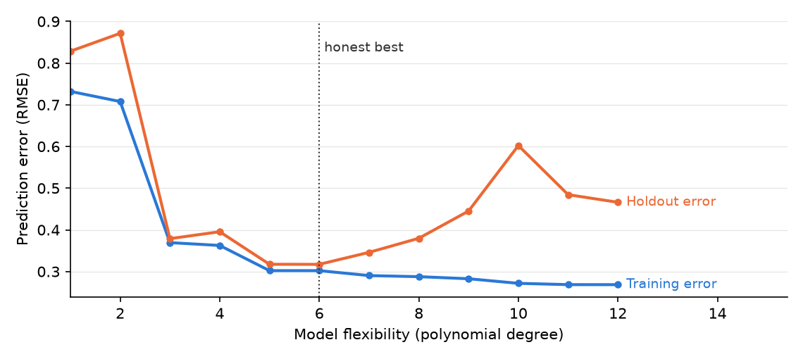

14 Prediction and Generalization
This chapter is part of a book in active development and has not yet been through the author’s review. Content may change as the review advances.

The research decision. Decide whether your question is truly a forecast about cases nobody has seen yet, and if it is, sign a four-part contract before you fit anything: target, baseline, split, metric, plus a leakage check. That contract is what lets you defend a modest honest score and say out loud where your forecast stops working.
14.1 Why this decision matters
The decision on the table: whether you are forecasting unseen cases, and if you are, what score you would accept as honest.
Picture a county public-health officer who must decide, week by week, whether to post a swimming advisory at a lake. Blooms of cyanobacteria can turn a safe beach into a health hazard within days. A vendor arrives with a model that flags harmful blooms “with 94% accuracy.”
“Ninety-four percent compared to WHAT? Most weeks this lake is fine, so if I just say ‘no bloom’ every single week I am already right about eighty-five percent of the time. If your model cannot clearly beat that, and prove it did so on weeks it never studied, I am not closing a public beach on its say-so.” — a public-health officer who has been burned by an impressive-sounding number
That officer asks the two questions this chapter trains you to answer before you trust any forecast. Is it better than the dumbest honest rule, and was it earned on cases the model never saw? Get those wrong and you cry wolf or miss a real hazard.
14.2 The concept
A prediction is a best guess about a case whose outcome you cannot see yet. Example: forecasting whether a lake blooms next week, before next week exists. Prediction is descriptive, not causal. It forecasts what will happen, never why.
What makes prediction its own question is its reach, the cases a claim is meant to cover. Prediction’s reach is unseen cases, units not in your data whose outcome is still unknown, such as next month’s samples. Its cousin is generalization, reach from your sample to a broader population, such as from the twelve lakes you measured to every lake in the watershed. Both go beyond the data in hand, and both are honest only when you can name the crossing that licenses them.
A forecast earns trust under a four-part contract, in fixed order. The target is the one column you predict, for example bloom_next_week. The baseline is the dumbest honest rule you must beat, usually “always guess the most common answer”; if 85% of weeks have no bloom, that rule scores 85% for free, so 85% is the bar. The split divides rows into a training set the model learns from and a held-out set, rows kept back during training and used only as its exam, say a random quarter of the weeks. The metric is how you keep score, matched to the target; accuracy misleads when blooms are rare, so recall on the bloom class, the share of real blooms the model catches, often matters more.
One trap sits above all others. Data leakage is a feature carrying information you would not have at the forecast moment, because its value is settled only at or after the outcome. Example: the toxin concentration measured during the bloom. A leaked feature inflates your score on today’s data and collapses on tomorrow’s, because it will not exist when you truly need the forecast.
14.3 A worked example
Suppose you want to warn swimmers a week ahead. Your target is bloom_next_week, one if the lake exceeds the advisory threshold and zero otherwise. Across three summers of weekly samples, 85% of weeks are clear, so your baseline, “always say no bloom,” scores 0.85 with no model at all.
You keep features genuinely known a week early: water temperature, recent rainfall, upstream phosphorus load. You fit a logistic model (a standard yes-or-no classifier), split off a held-out quarter of the weeks, and score both only on those held-out weeks. The model lands around 0.88. That four-point edge feels small, and its smallness is the honest result: a modest true win beats a dramatic fake one.
Then a well-meaning collaborator adds chlorophyll_a, the pigment reading. Held-out accuracy leaps to 0.97. Exciting, until you ask when chlorophyll is measured: during the very bloom you are forecasting. It is the outcome wearing a different label. Drop it, and the score falls back to 0.88. The timing test, not the accuracy, decides. And because you trained on one shallow lake, you name the boundary out loud: on a deep, cold reservoir the pattern may not hold, so the forecast does not yet generalize there.
14.4 A seeded simulation
The chapter claims a model can get better at the data it has while getting worse at cases it has never seen. Watch it happen. The seed makes the run reproducible: the same code always draws the same world. The code builds one world (a sine curve plus noise), draws a training set and a holdout set from that same world, fits polynomials of growing flexibility to the training set, and scores every fit on both sets.
import numpy as np
import matplotlib.pyplot as plt
SEED = 464
rng = np.random.default_rng(SEED)
def world(n):
x = rng.uniform(-3, 3, n)
return x, np.sin(1.5 * x) + rng.normal(0, .35, n)
x_train, y_train = world(40)
x_test, y_test = world(40)
degrees = np.arange(1, 13)
train_err, test_err = [], []
for d in degrees:
coefs = np.polyfit(x_train, y_train, d)
train_err.append(np.sqrt(np.mean(
(np.polyval(coefs, x_train) - y_train) ** 2)))
test_err.append(np.sqrt(np.mean(
(np.polyval(coefs, x_test) - y_test) ** 2)))
best = degrees[int(np.argmin(test_err))]
fig, ax = plt.subplots(figsize=(7.6, 3.4))
ax.plot(degrees, train_err, color="#2a78d6", lw=2, marker="o", ms=4)
ax.plot(degrees, test_err, color="#eb6834", lw=2, marker="o", ms=4)
ax.axvline(best, color="#333333", ls=":", lw=1)
ax.text(degrees[-1], train_err[-1], " Training error", color="#2a78d6",
fontsize=9, va="center")
ax.text(degrees[-1], test_err[-1], " Holdout error", color="#eb6834",
fontsize=9, va="center")
ax.text(best + .1, max(test_err) * .95, "honest best", color="#333333",
fontsize=9)
ax.set_xlabel("Model flexibility (polynomial degree)")
ax.set_ylabel("Prediction error (RMSE)")
ax.set_xlim(degrees[0], degrees[-1] + 3.4)
plt.show()
The blue training error only falls: every extra degree of flexibility lets the model bend closer to points it has already seen. The orange holdout error falls while the model is learning signal, bottoms out near degree six, and climbs as the model starts memorizing noise. The dotted line is the honest best: the flexibility a held-out check would pick. Nothing in the blue line alone would ever tell you to stop there; only data the fit never touched can say that, which is the whole case for the held-out check this pathway requires. In the companion notebook, raise the noise (the .35) and watch the honest best move left: the noisier the world, the less flexibility the truth can support.
14.5 The Colab laboratory
This chapter has its own companion notebook — open it in Colab with the badge above. The notebook collects the chapter’s prompts and code and ends with the It is your turn workspace, so you can complete the chapter’s step of your project without leaving Colab. The full classroom laboratory behind this chapter is course notebook nb08 — Prediction: generalizing to unseen cases (open in Colab), part of the companion course presented in the For instructors appendix. In the lab you sign the four-part contract on a real dataset, score an honest baseline first, then build a leak on purpose so you feel a fake score climb and learn to hunt it by correlation and timing before you retrain clean.
14.6 Recommended AI prompts
Commit your own answer first, then delegate. Paste real output, never a number you remember. Expect to run each prompt more than once: read the answer, name the part you do not believe, put that objection back into the prompt, run it again. Tools that run that loop by themselves, fitting and refitting a model across several turns, make the leakage question below more urgent rather than less. Nobody in the loop but you knows when your data were recorded.
Act as a Python tutor. Here is a cell that holds out 25% of my weekly
lake samples, scores a majority-class baseline on them, then scores a
logistic model on the SAME held-out weeks: [paste cell]. Explain, line
by line, what the split does and why it must happen before any fitting.
Then give me one independent way to confirm the held-out weeks were
never in training.After running, verify: read the baseline, model, and margin off your own printout and confirm the tool’s numbers match, not ones it guessed. Counters confident fabrication, a fluent walkthrough quoting a margin your code never produced.
Here is the outcome I want to predict and the moment I need the forecast:
a bloom next week, decided by next week's samples. Here is my candidate
feature list with when each value is recorded: [list]. For each feature,
say whether its value is settled before, at, or after the outcome, and
flag any that could not exist at prediction time.After running, verify: re-derive the timing of the one feature it clears most confidently. If any feature is settled at or after the bloom, reject it whatever the tool says. Counters illusion of completeness, a tidy list omitting the one late-settled feature that dooms the forecast.
Act as a hostile reviewer. Attack this headline: "Our model forecasts
blooms with 88% held-out accuracy." Name every reason a skeptic would
distrust it, including the baseline it beat, the metric, and any hidden
leak.After running, verify: check each objection against your printout and keep the ones your numbers support. Counters sycophantic agreement, where an assistant primed to help praises a headline you wrote.
Four calls stay yours. The target: what you forecast and why it matters. The baseline: the honest rule the model must beat. The timing of every feature: whether a value would truly exist at the forecast moment, which only you, who knows your data’s timeline, can settle. And the verdict on whether your project should predict at all. A tool that has never seen your timeline cannot make these calls for you.
14.7 An AI failure case
You paste your feature list and ask an AI partner which features are safe to use. It answers with confidence: “chlorophyll_a is your strongest predictor, keep it.” The reasoning sounds airtight, because chlorophyll correlates almost perfectly with blooms. That near-perfect correlation is exactly the tell. This is the plausible-but-wrong-method failure: the tool ranked the feature on how well it fits the past, not on whether it could exist in time for a forecast. You catch it with one question statistics alone cannot answer. When is chlorophyll measured? During the bloom, so no forecast made a week earlier could have it. Drop it, watch the score fall back to 0.88, and keep the honest model.
14.8 It is your turn
Your design is declared and diagnosed. This step decides whether your project is really forecasting cases nobody has seen yet, and if it is, puts that forecast under contract before you fit a single model.
- Ask the blunt version of your question: does your project need to guess an outcome for a case whose outcome does not exist yet? Write yes or no, and the one sentence that justifies your answer.
- If yes, sign the four-part contract, in order. Name the target column, the dumbest honest baseline it has to beat, the split that keeps a slice of cases unseen, and the metric matched to how rare your outcome is.
- List your features and write beside each one the moment its value is settled. Circle anything settled at or after the outcome. That circled set is your leakage list, and it belongs in your write-up whether or not you drop the features on it.
- Write the boundary in one sentence: the cases your forecast covers, and the ones a reader should not assume it covers. Be specific about what makes them different.
- If prediction is not your question, write the line that says so plainly, then run step 3 anyway. A variable settled after the outcome quietly sinks descriptive and causal work too.
- Log the step in your AI Research Ledger, and verify at least one output with a named method from the Verification Guide. For a fitted model the method is a holdout sample: never report a score computed on rows the model trained on. An AI reviewer may run the check with you; the decision to accept or reject stays yours.